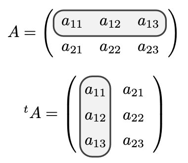

tcolorbox パッケージ 利用ガイドtcolorbox は現在の主要なLaTeX環境（LuaLaTeXやTeX Liveなど）には最初から標準で含まれているため、追加のインストール作業は不要です。ソースコードのプリアンブル（\begin{document} の前）に以下のように記述して読み込みます。
\usepackage{tcolorbox}
他のパッケージ（特に xcolor、emath、ketpic など）を併用している場合、記述する場所に注意が必要です。
tcolorbox は内部で自動的に xcolor パッケージを読み込みます。すでに先に xcolor が個別に読み込まれている場合、tcolorbox をそれより前に書くとオプションの競合（Option clash for package xcolor.）というエラーが発生します。emath や pict2e などのグラフィック系パッケージとの秩序を崩さないためにも、すべてのパッケージ群の最下部にそっと追加するのが鉄則です。\oval など）と異なり、アンチエイリアスの効いた綺麗な角丸長方形と、中の自由な色塗りつぶしが簡単に実現できます。equation 環境など）や箇条書き（itemize 環境など）を丸ごと配置してもレイアウトが崩れません。title=... を指定するだけで、箱の上部に見出し付きの専用タイトルバーを自動生成できます。breakable オプション（※要 \tcbuselibrary{breakable} または [most] 読み込み）を指定すれば、ページの切れ目で自動的に箱を分割してくれます。tcolorbox 環境 と \tcbox コマンド の違いとサンプルtcolorbox パッケージには、用途に合わせて使い分ける 「環境（Environment）」 と 「コマンド（Command）」 の2つの形が用意されています。
tcolorbox（環境）\begin{tcolorbox}[colback=blue!5, colframe=blue!50, title=定理の解説, arc=2mm]
ここには複数行にわたる長い文章を入れることができます。\\\\
自動的に端で折り返されます。
\begin{equation*}
A = \begin{pmatrix} 1 & 1 \\\\ 1 & 1 \end{pmatrix}
\end{equation*}
\end{tcolorbox}
\tcbox（コマンド）これは \tcbox[colback=red!10, colframe=red!50, arc=1mm]{重要キーワード} です。
tcolorbox 環境や \tcbox コマンドでは、後ろに続く大括弧 [...] の中にカンマ , 区切りで命令（オプション）を記述することで、見た目を自由自在に調整できます。
width=寸法 : 箱全体の横幅を指定します（例: width=30mm, width=8cm）。省略すると紙面いっぱい（\textwidth）になります。height=寸法 : 箱全体の縦幅（高さ）を指定します（例: height=10mm, height=3cm）。arc=寸法 : 角の丸みの半径を指定します（例: arc=1mm, arc=2.5mm）。単位（mm や cm）の省略はエラーの原因になるため必須です。boxrule=寸法 : 周りの枠線の太さを指定します（例: boxrule=1pt, boxrule=0.5pt）。colback=色名 : 中の塗りつぶし（背景）の色を指定します（例: colback=white, colback=cyan!10 ※cyan!10 はシアン10%の薄さの意味）。colframe=色名 : 周りの枠線の色を指定します（例: colframe=black, colframe=blue!50）。背景色と同じ色にすれば枠線を消したように見せることができます。valign=位置 : height で高さを固定した際、内部の文字を上下のどこに配置するかを指定します（例: valign=center で上下中央揃え）。top=寸法, bottom=寸法, left=寸法, right=寸法 : 箱の内部から文字までの上下左右の余白（マージン）を指定します。\tcbox コマンドで中身を空にしてサイズ固定する際の制約「中身を空欄にしたまま、自由なサイズ（横幅・縦幅）の箱を作りたい」という場合、記述がシンプルな \tcbox{} を使いたくなりますが、ここには強い制約（罠）があります。
\tcbox は裏側で「中身の文字幅に合わせて自動伸縮する」という強力な計算が働いています。{}）にした状態で width=25mm などと指定しても、幅が大きくならずに縮んでしまったり、逆に小さく指定してもデフォルトの内部余白のせいでそれ以上狭くならなかったり
します。isnode や ignore text width、varwidth=false など）は、LaTeXのバージョンや環境、読み込んでいるライブラリ依存が非常に激しく、未定義エラーを引き起こしやすいという重大なデメリットがあります。tcolorbox 環境がベスト中身を空欄にしてミリ単位で完全にサイズをコントロールしたいときは、制約のきつい \tcbox を無理に使わず、環境版の tcolorbox を使用するのが最も安定しており、確実な正解です。
環境版であれば自動伸縮の邪魔が入らないため、指定した width と height がストレートに反映されます。
外枠のサイズをミリ単位で厳密に守るためには、箱本来が持つ文字用の内側余白（マージン）を top=0mm, bottom=0mm, left=0mm, right=0mm で完全にクリアしてあげるのが綺麗に仕上げるコツです。
\begin{tcolorbox}[width=25mm, height=6mm, arc=2mm, boxrule=1pt, top=0mm, bottom=0mm, left=0mm, right=0mm]
\end{tcolorbox}
\begin{tcolorbox}[width=7mm, height=18mm, arc=2.5mm, boxrule=1pt, top=0mm, bottom=0mm, left=0mm, right=0mm]
\end{tcolorbox}
\begin{layer}{100}{0}
\putnotec{89.5}{8.5}{\begin{tcolorbox}[width=25mm,height=6mm,arc=2mm,boxrule=1pt]\end{tcolorbox}}%長方形
\putnotesw{105}{5}{$A=\left(\begin{array}{rrr}
a_{11}&a_{12}&a_{13}\\\\ a_{21}&a_{22}&a_{23}\end{array}\right)$}%行列
\putnotec{86.3}{29}{\begin{tcolorbox}[width=7mm,height=18mm,arc=2.5mm,boxrule=1pt]\end{tcolorbox}}%長方形
\putnotesw{102}{20}{$^tA=\left(\begin{array}{rrr}
a_{11}&a_{21}\\\\ a_{12}& a_{22}\\\\ a_{13}&a_{23}\end{array}\right)$}%行列
\end{layer}\par
